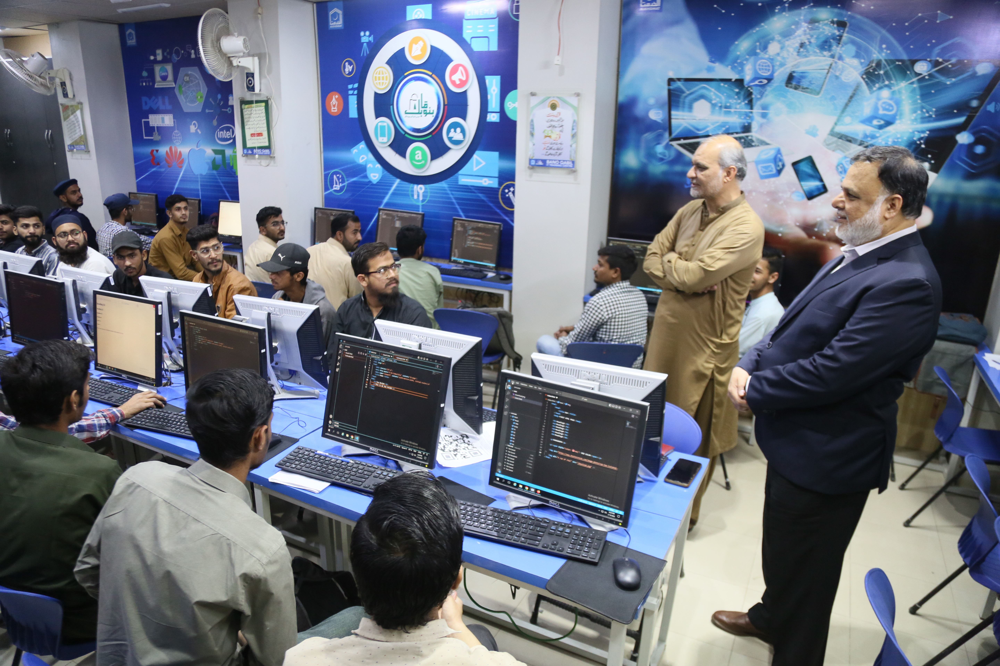

Bano Qabil Institute: Paving the Path to IT Excellence with Diverse Course Offerings
Published on December 18, 2023

In the ever-evolving landscape of Information Technology (IT) education, Bano Qabil Institute has emerged as a beacon of learning, offering a diverse array of courses to empower individuals with the skills needed for success in the digital age. With a
commitment to excellence and a comprehensive curriculum, Bano Qabil Institute stands out as a key player in shaping the next generation of IT professionals. This article explores the institute's extensive course offerings, emphasizing
its contribution to fostering expertise in web development, graphics designing, freelancing, cyber security, Python programming, Amazon FBA, and beyond.
Bano Qabil Institute prides itself on addressing the dynamic needs of the IT industry by providing courses that span a wide spectrum of domains. One of the institute's flagship offerings is the Web Development course, where students
delve into the intricacies of front-end and back-end development, mastering languages such as HTML, CSS, JavaScript, and more. The institute's commitment to producing well-rounded professionals is evident in its Graphics Designing course,
equipping learners with the skills to create visually stunning and engaging designs using industry-standard tools.
As the gig economy continues to thrive, Bano Qabil Institute recognizes the significance of freelancing skills in today's job market. The Freelancing course empowers individuals to navigate the world of online work, covering topics
such as building a personal brand, client communication, and effective project management. This course is designed to not only impart technical skills but also instill a business mindset crucial for success in the freelancing arena.
In the realm of cybersecurity, Bano Qabil Institute takes a proactive approach to address the growing concerns of digital threats. The Cyber Security course covers the fundamentals of ethical hacking, network security, and incident
response, ensuring that students are well-equipped to safeguard digital assets in an increasingly interconnected world.
Python programming, known for its versatility and widespread use, is a cornerstone of Bano Qabil Institute's curriculum. The Python Programming course provides a comprehensive understanding of this powerful language, empowering students
to develop applications, automate tasks, and analyze data with ease.
For those aspiring to enter the realm of e-commerce, the Amazon FBA course at Bano Qabil Institute is designed to demystify the complexities of selling on the world's largest online marketplace. From product sourcing to optimization,
students gain practical insights into establishing a successful Amazon FBA business.
What sets Bano Qabil Institute apart is not only its commitment to diverse course offerings but also its dedication to quality education. The institute employs experienced instructors and industry experts to deliver up-to-date and
relevant content. Moreover, the emphasis on hands-on projects and real-world applications ensures that students graduate with practical skills ready for immediate implementation in the professional arena.
In conclusion, Bano Qabil Institute emerges as a comprehensive hub for IT education, offering a rich tapestry of courses to cater to the diverse needs of aspiring IT professionals. With a focus on practical skills, industry relevance,
and a commitment to excellence, the institute stands as a testament to its mission of empowering individuals to become not just skilled practitioners but industry leaders in the dynamic world of Information Technology.